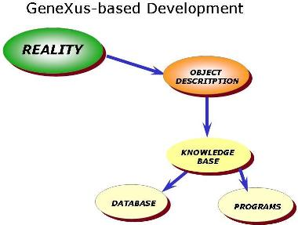

 The starting point of the GeneXus methodology is describing the user's visions in order to model the system. Based on this model, GeneXus builds the computational structure (database and programs) to support it. In this way, GeneXus frees analysts from having to concentrate on implementation details, enabling them to develop a system without having to think of the plaftorm implementation. Those details will only need to be defined when the application is tested. When a Knowledge Base is created, the analyst must select the default generator that will be used to generate the programs and for the reorg process. This default generator is part of the default Environment. The next step, after the Knowledge Base is created, is to start describing real objects using GeneXus objects and programming. To execute the application, you have to set other properties of the Environment, like the database connection information. At this point, to run the application all you have to do is press F5 (Run). The Run command knows what needs to be done in any situation! For more details on this, see Build Process. GeneXus also provides tools for versioning changes in the Knowledge Base (management of Knowledge Base Versions) to acomplish Software Configuration Management (SCM). |
| Pages |
| Typical GeneXus development cycle for Agile |